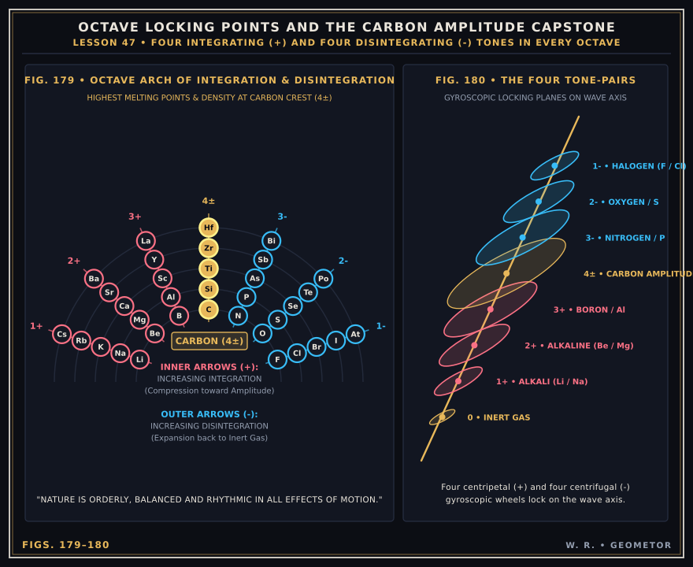
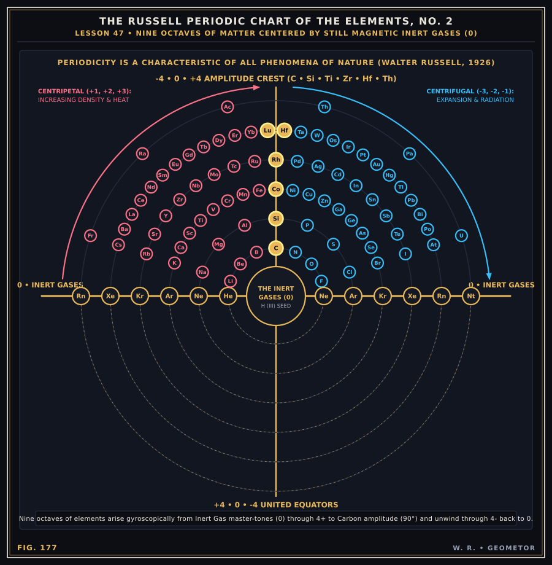

Chapter VI: The Making of Matter — The Nine-Octave Periodic Wave of the Elements¶
Inert Gas Master-Tones, Octave Locking Points, and Carbon at the Crest (Lesson 47, Figs. 175–180)
In Lesson 47 (We Now Consider the Making of Matter), Russell applies the Cube-Sphere wave-field directly to chemistry and atomic structure, contrasting the traditional Mendeleev table (Fig. 175) with his Nine-Octave Periodic Chart of the Elements (Fig. 177, copyrighted in 1926).
Inert Gases as Still Magnetic Master-Tones (`0`): The inert gases (Helium, Neon, Argon, Krypton, Xenon, Radon) are not merely “unreactive elements”—they are the zero-equator recording seeds of Still Magnetic Light from which each octave of moving matter unfolds and into which it disappears.
Four Pairs of Gyroscopic Locking Points (`1±, 2±, 3±, 4±`): In each octave, four centripetal (+) integrating pressure locks (1+ Alkali metals, 2+ Alkaline earths, 3+ Boron/Aluminum group) wind upward in density and melting point toward the `4±` Amplitude Crest (Carbon, Silicon, Titanium/Cobalt, Zirconium/Rhodium, Hafnium/Lutetium), while four centrifugal (-) disintegrating locks (3- Pnictogens, 2- Chalcogens, 1- Halogens) unwind back to the next Inert Gas (0).


Plate VII (Figs. 179–180): The Octave Arch of Increasing Integration (+) and Disintegration (-) culminating in Carbon (4±), paired with the gyroscopic tone-wheels along the wave axis (Fig. 180).¶
The Russell Nine-Octave Periodic Chart (Fig. 177)¶


Plate VIII (Fig. 177): GEOMETOR vector reconstruction of The Russell Periodic Chart of the Elements, No. 2 (1926), showing the concentric octave waves centered on the horizontal Inert Gas zero-axis (0 — 0) and peaking along the vertical -4 • 0 • +4 Amplitude axis.¶
Interactive 3D Helical Octave Wave of Matter¶
Explore the 3D corkscrew geometry of a single Russell Octave (He -> Li -> Be -> B -> C -> N -> O -> F -> Ne) as gyroscopic wheels locking at discrete pressure planes along the wave axis: